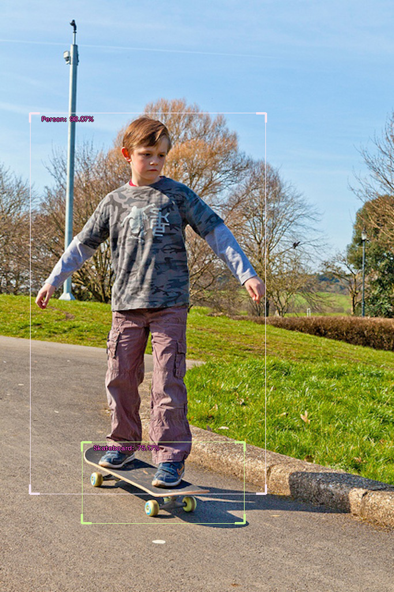
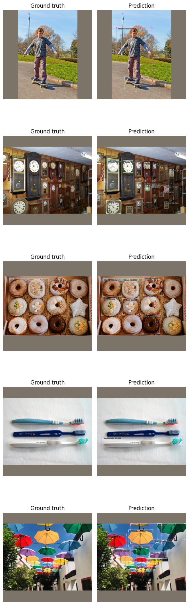
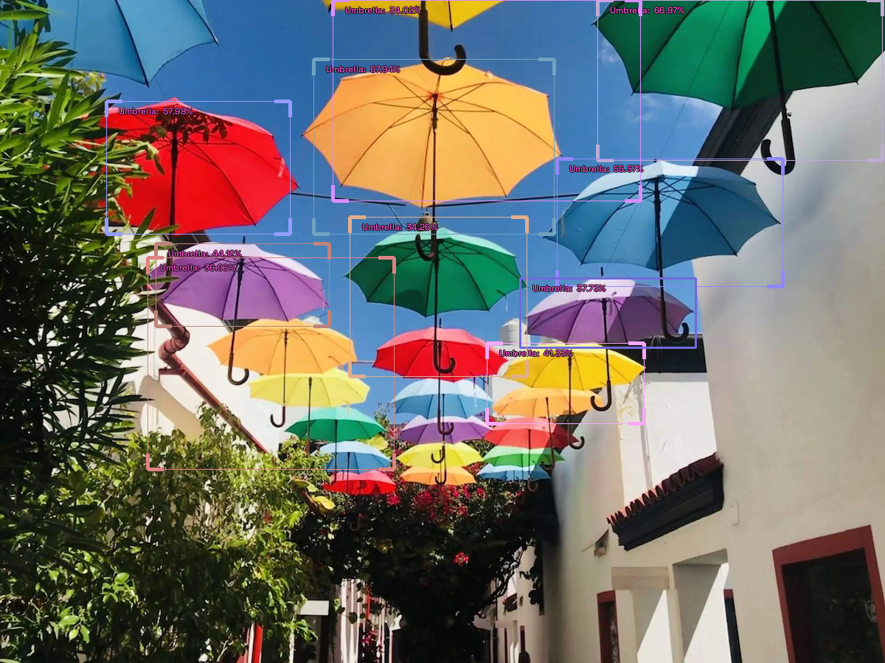
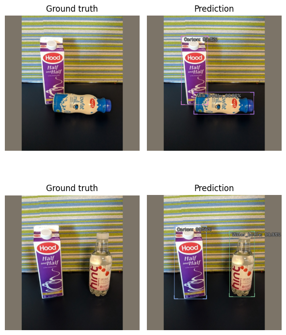

Inference using IceVision

Install IceVision
The following downloads and runs a short shell script. The script installs IceVision, IceData, the MMDetection library, and Yolo v5 as well as the fastai and pytorch lightning engines.
Install from pypi...
# # Torch - Torchvision - IceVision - IceData - MMDetection - YOLOv5 - EfficientDet Installation
# !wget https://raw.githubusercontent.com/airctic/icevision/master/icevision_install.sh
# # Choose your installation target: cuda11 or cuda10 or cpu
# !bash icevision_install.sh cuda11
... or from icevision master
# Torch - Torchvision - IceVision - IceData - MMDetection - YOLOv5 - EfficientDet Installation
!wget https://raw.githubusercontent.com/airctic/icevision/master/icevision_install.sh
# Choose your installation target: cuda11 or cuda10 or cpu
!bash icevision_install.sh cuda11 master
# Restart kernel after installation
import IPython
IPython.Application.instance().kernel.do_shutdown(True)
Imports
All of the IceVision components can be easily imported with a single line.
from icevision.all import *
List of images for inference
Please store your images in a folder, and populate the path_to_folder variable with the corresponding folder name.
# Pick your images folder
path_to_image_folder = "./images"
img_files = get_image_files(path_to_image_folder)
# img_files
img = PIL.Image.open(img_files[0])
img
Loading a checkpoint and creating the corresponding model
The checkpoint file can be either a local file or an URL
# checkpoint_path = 'checkpoints/fridge-retinanet-save-checkpoint-full.pth'
checkpoint_path = 'http://download.openmmlab.com/mmdetection/v2.0/retinanet/retinanet_r50_fpn_1x_coco/retinanet_r50_fpn_1x_coco_20200130-c2398f9e.pth'
from icevision.models import *
# The model is automatically recreated in the evaluation mode. To unset that mode, you only need to pass `eval_mode=Fales`)
checkpoint_and_model = model_from_checkpoint(checkpoint_path,
model_name='mmdet.retinanet',
backbone_name='resnet50_fpn_1x',
img_size=640,
is_coco=True)
# Just logging the info
model_type = checkpoint_and_model["model_type"]
backbone = checkpoint_and_model["backbone"]
class_map = checkpoint_and_model["class_map"]
img_size = checkpoint_and_model["img_size"]
model_type
backbone
# class_map
img_size
<module 'icevision.models.mmdet.models.retinanet' from '/home/ubuntu/icevision/icevision/models/mmdet/models/retinanet/__init__.py'>
<icevision.models.mmdet.models.retinanet.backbones.backbone_config.MMDetRetinanetBackboneConfig at 0x7f8d236b91c0>
640
Get Model Object
model_from_checkpoint(checkpoint_path) returns a dictionary: checkpoint_and_model. The model object is stored in checkpoint_and_model["model"].
# Get model object
# The model is automatically set in the evaluation mode
model = checkpoint_and_model["model"]
# Check device
device=next(model.parameters()).device
device
# Transforms
img_size = checkpoint_and_model["img_size"]
valid_tfms = tfms.A.Adapter([*tfms.A.resize_and_pad(img_size), tfms.A.Normalize()])
device(type='cpu')
Single Image Inference
The end2end_detect() not only compute predictions for a single image but also automatically adjust predicted boxes to the original image size
img = PIL.Image.open(img_files[0])
pred_dict = model_type.end2end_detect(img, valid_tfms, model, class_map=class_map, detection_threshold=0.5)
pred_dict['img']

Batch Inference
The following option shows to do generate inference for a set of images. The latter is processed in batches.
# Create a dataset
imgs_array = [PIL.Image.open(Path(fname)) for fname in img_files]
infer_ds = Dataset.from_images(imgs_array, valid_tfms, class_map=class_map)
# Batch Inference
infer_dl = model_type.infer_dl(infer_ds, batch_size=4, shuffle=False)
preds = model_type.predict_from_dl(model, infer_dl, keep_images=True, detection_threshold=0.33)
# You may need to un-comment this in certain environments to preview images:
%matplotlib inline
show_preds(preds=preds[0:5])
0%| | 0/2 [00:00<?, ?it/s]

How to export inferences as COCO annotations
These will match the dimensions of the original images. This could be useful if you'd like to create preliminary pseudo-annotations for unlabeled data:
from icevision.data.convert_records_to_coco_style import export_batch_inferences_as_coco_annotations
info = {
"year": "2022",
"version": "1",
"description": "Exported from IceVision",
"contributor": "Awesome contributor",
"url": "https://lazyannotator.fun",
"date_created": "2022-08-05T20:13:09+00:00"
}
licenses = [
{
"name": "Creative Commons Attribution 4.0",
"id": 0,
"url": "https://creativecommons.org/licenses/by/4.0/legalcode",
}
]
export_batch_inferences_as_coco_annotations(
preds=preds,
img_files=img_files,
transforms=valid_tfms,
class_map=class_map,
output_filepath="../inferences_for_pseudo_labels.json",
info=info,
licenses=licenses,
)
New COCO annotation file saved to ../inferences_for_pseudo_labels.json
Preview predictions on original image:
# Index of image you'd like to check
i = 4
this_pred = preds[i]
record = this_pred.pred
# Draw that image
pred_img = draw_record(
record=this_pred,
class_map=class_map,
display_label=True,
display_score=True,
display_bbox=True,
font_path=get_default_font(),
font_size=12,
label_color=("#FF59D6"),
return_as_pil_img=True,
)
pred_img

How to save a model and its metadata in IceVision
When saving a model weights, we could also store the model metadata that are retrieved by the model_from_checkpoint(checkpoint_path) method
# How to save a model and its metadata
checkpoint_path = 'coco-retinanet-checkpoint-full.pth'
save_icevision_checkpoint(model,
model_name='mmdet.retinanet',
backbone_name='resnet50_fpn_1x',
classes = class_map.get_classes(),
img_size=img_size,
filename=checkpoint_path,
meta={'icevision_version': '0.9.1'})
Loading models already containing metadata
If you have saved your model weights with the model metadata, you only need to call model_from_checkpoint(checkpoint_path): No other arguments (model_name, backbone_name, classes, img_size) are needed. All the information is already embedded in the checkpoint file.
checkpoint_path = 'https://github.com/airctic/model_zoo/releases/download/m6/fridge-retinanet-checkpoint-full.pth'
checkpoint_and_model = model_from_checkpoint(checkpoint_path)
# Just logging the info
model_type = checkpoint_and_model["model_type"]
backbone = checkpoint_and_model["backbone"]
class_map = checkpoint_and_model["class_map"]
img_size = checkpoint_and_model["img_size"]
model_type
backbone
# class_map
img_size
# Inference
# Model
model = checkpoint_and_model["model"]
# Transforms
img_size = checkpoint_and_model["img_size"]
valid_tfms = tfms.A.Adapter([*tfms.A.resize_and_pad(img_size), tfms.A.Normalize()])
# Pick your images folder
path_to_image_folder = "../samples/fridge/odFridgeObjects/images"
img_files = get_image_files(path_to_image_folder)
# Create a dataset with appropriate images
imgs_array = [PIL.Image.open(Path(fname)) for fname in img_files]
infer_ds = Dataset.from_images(imgs_array, valid_tfms, class_map=class_map)
# Batch Inference
infer_dl = model_type.infer_dl(infer_ds, batch_size=4, shuffle=False)
preds = model_type.predict_from_dl(model, infer_dl, keep_images=True)
show_preds(preds=preds[0:2])
<module 'icevision.models.mmdet.models.retinanet' from '/home/ubuntu/icevision/icevision/models/mmdet/models/retinanet/__init__.py'>
<icevision.models.mmdet.models.retinanet.backbones.backbone_config.MMDetRetinanetBackboneConfig at 0x7f8d236b91c0>
384
0%| | 0/2 [00:00<?, ?it/s]

Happy Learning!
If you need any assistance, feel free to join our forum.